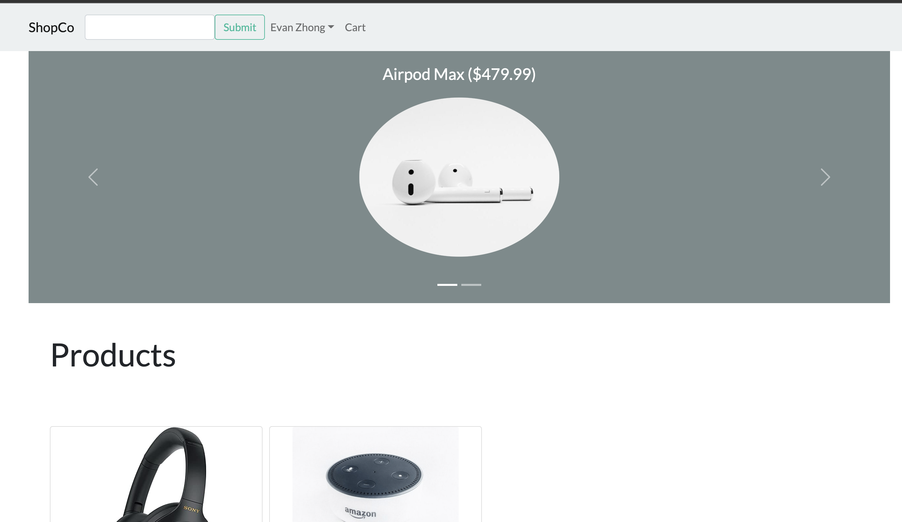
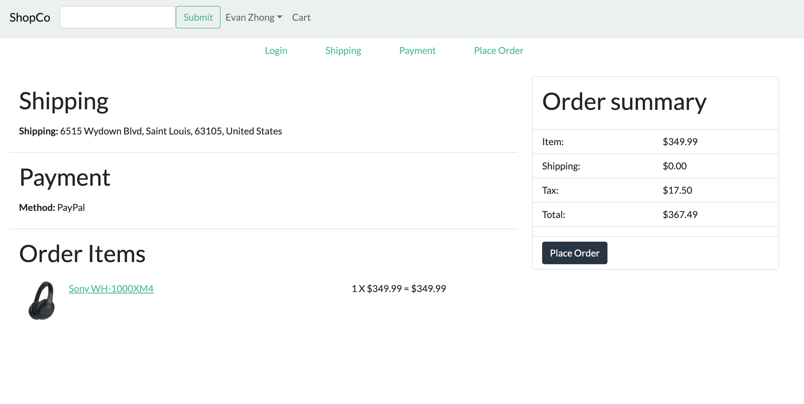
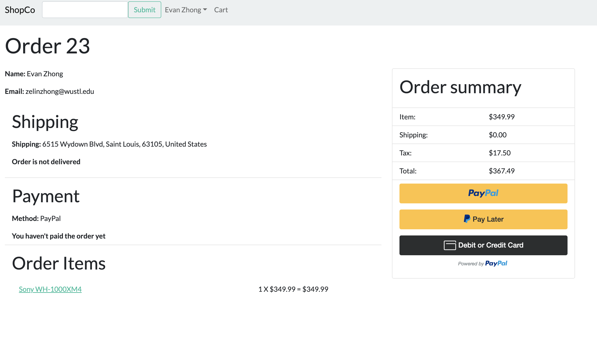

About Me
Hi, I'm Young (He/Him), an undergraduate student pursuing a B.S. in Computer Science and Financial Engineering at
Washington University in St. Louis. For as long as I can remember, I have had an affinity for solving complex problems
involving numbers. This drew me to explore the fields of computer programming, mathematics, and finance. My passion in these
areas also introduced me to machine learning, which captivated my attention as I was excited about the possibilities of
combining data and computational power to achieve precision. Thus, I plan on attending graduate school to expand my understanding
of the foundations and applications of machine learning, preparing me for a career where I can build products with AI capabilities.
Apart from my career and academic interests, I love video editing, photography, reading, traveling,
basketball, and the gym. Feel free to send me a message if you want to chat!
Work Experience
Software Development Engineer Intern (May 2023 - August 2023)
In the summer of 2023, I worked as a software development intern at AWS, hoping to gain experience working in the software industry.
My team was developing a new product in the no-code/low-code space that would empower developers to effortlessly design and build sophisticated
apps with database-like capabilities using an intuitive visual editor. My project was to design and implement a full-stack API allowing users to
duplicate their apps. I used TypeScript to build the backend and React for the frontend. I also worked with various AWS services, including DynamoDB,
CodeCatalyst, and Lambda. Since I completed my project early, I worked on stretch goals to make this feature production-ready, writing Cypress end-to-end
tests and working with the security team. From this experience, I displayed my aptitude for delivering results and my willingness to take ownership of my
work. With my passion for developing software products, I intend to use this experience to contribute to innovative projects that will make positive impacts.
Research Assistant (January 2022 - August 2022)
In the summer of 2022, I was selected to participate in the Research for Undergraduate (REU) program in the CS department at
Washington University in St. Louis. I conducted machine learning based research in Dr. Ning Zhang’s Computer Security and Privacy
Lab to investigate users’ privacy concerns toward mobile apps. I spearheaded efforts in curating and processing the dataset for
sentiment analysis, which included scraping reviews from the App Store, applying text cleaning, and conducting keyword extraction
to identify reviews that raise privacy concerns. Without experience processing large datasets, I had to learn Pandas and data/file
management from scratch. I also had to learn how to work independently, thinking critically and searching exhaustively before asking
for assistance. This experience gave me a glimpse into machine learning in a real-world setting, leaving me with a voracious desire
to be more involved in developing and optimizing the models. Before the REU, I assisted the lab with its cyber-physical research.
This included doing preliminary studies on the adversarial attacks of autonomous vehicles, understanding the exposure sequence of
mainstream HDR (high dynamic range) algorithms to identify possible vulnerabilities of the camera sensors. I also assisted in completing
the setup of xvector-PLDA, yvector-PLDA, and GMM-PLDA speech recognition systems (SRS) by setting up the conda environment and adapting
the original Python scripts to extract decision results and scores of the enrolled speakers. This experience displays my ability to work
in a research setting, which I hope to bring to my graduate studies.
Teaching Assistant (September 2021 - May 2023)
I served as the teaching assistant for the Data Structure and Algorithm (CSE247) and Introduction to Machine Learning (CSE417) course at
Washington University. My responsibilities include managing a lab with 50+ students, hosting weekly office hours, proctoring exams, and
grading weekly assessments. I would assist students during lab sessions by clarifying instructions and explaining lecture concepts. Additionally,
I offered students advice on how to debug their code during office hours. These courses cover challenging topics that require strong mathematical,
theoretical, and practical understanding. Thus, I had to fully immerse myself in these topics to be successful in this role.
Academic Tutor (September 2021 - December 2021)
I served as the tutor for Engineering Student Services at my school to help students with no prior experience in coding. This includes introducing
fundamental programming concepts like recursion, linear data structures, and object-oriented programming. Moreover, I also offered clear alternatives to
assist students in debugging convoluted code. During exam weeks, I would assist students by hosting review sessions to review core concepts and clarify challenging questions.
Projects



E-Commerce Website (JavaScript, React, Django, MySQL)
I built a full-stack e-commerce website with React, Django, and MySQL that includes ten separate features that allow users to browse and purchase products easily.
This includes a full-featured shopping cart that will enable buyers to review their products before their purchase. They could also submit reviews/ratings of the
products on the product page. I also created a search bar that would allow users to search for products. To help navigate the website, I also implemented product
pagination and carousels to help sort the products by ratings. I also granted administrators the power to manage products, users, and orders.
I used React and React Bootstrap to build out the frontend for this project. When building out the backend, I noticed the amount of repetitive code that I was writing.
As a result, I ended up using Django because of its scalability and maintainability. I used MySQL as the database to store user, product, review, order, order item,
and shipping address information. I also used the PayPal API to build the checkout process.
Multi-Room Chat Server (JavaScript, Node.js, Socket.IO)
I developed a multi-room chat server that allowed users to create and join different chat rooms. As a creator of the room, one can temporarily kick users out, permanently ban
users from joining, transfer ownership, and disband the chat room completely. Additionally, users also have the option to create private rooms, which will require password
authentication when others try joining them.
I built this server by leveraging Node.js as the runtime environment. This allows the server to handle heavy input-output operations because of its asynchronous nature.
I also used Socket.IO to establish a WebSocket connection that enables real-time, bidirectional communication between the server and the client.
Earnings Analyzer (Python, Pandas, Yahoo Finance API)
This project was motivated by my observation of the large fluctuation in stock prices immediately after earnings release. Thus, I set out to identify the elements of the earnings
release that most precisely predict the direction of the fluctuation in stock prices. By constructing a backend API to generate concise tables of key financial metrics and the
historical price effects of earnings reports on stocks, I created a method to curate large datasets for further analysis. Moving forward, I plan on applying machine learning algorithms
and statistical methods to identify the most important variables in predicting the direction of the fluctuation.
Skills

Programming Langauges: Python, Java, TypeScript, JavaScript, R, C++, HTML/CSS, Bash, GraphQL, SQL
Libraries/Frameworks: React, Node.js, Django, Pandas, NumPy, Scikit-learn, Matplotlib
Tools: Linux, Git, AWS, Conda, MySQL, Cypress, VS Code, IntelliJ
Languages: English, Mandarin
Contact
Email: chih-yang.l@wustl.edu